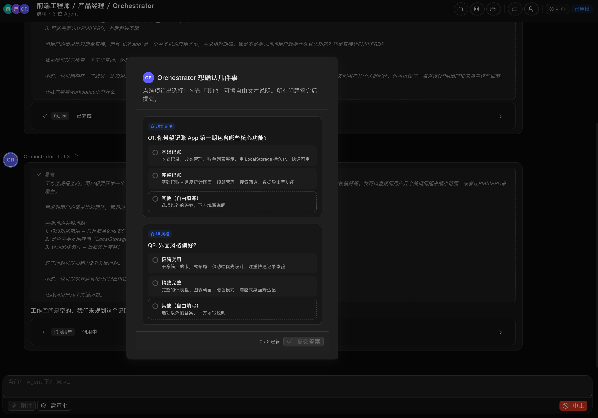
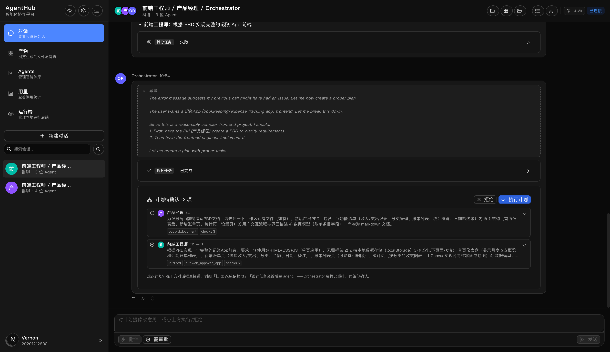
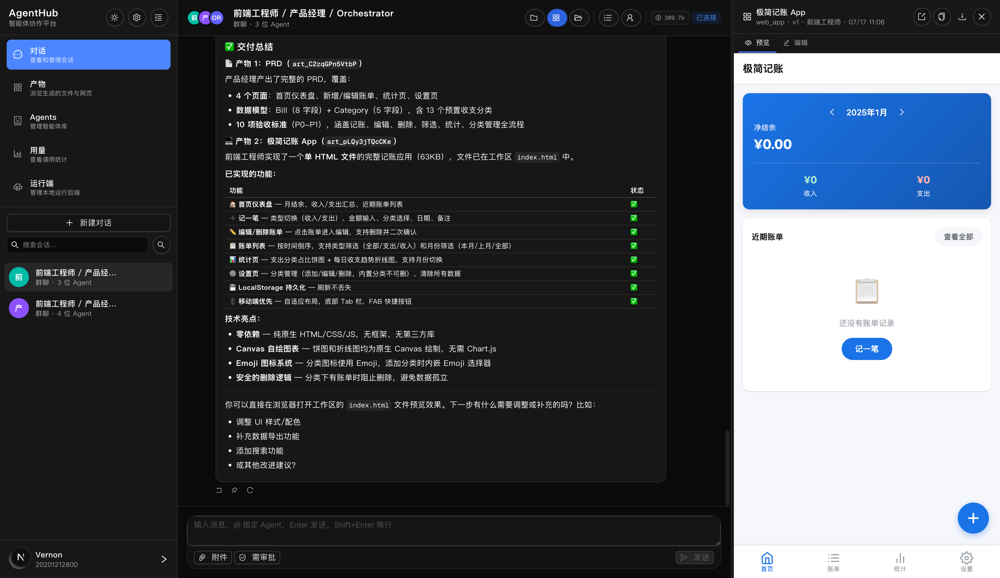
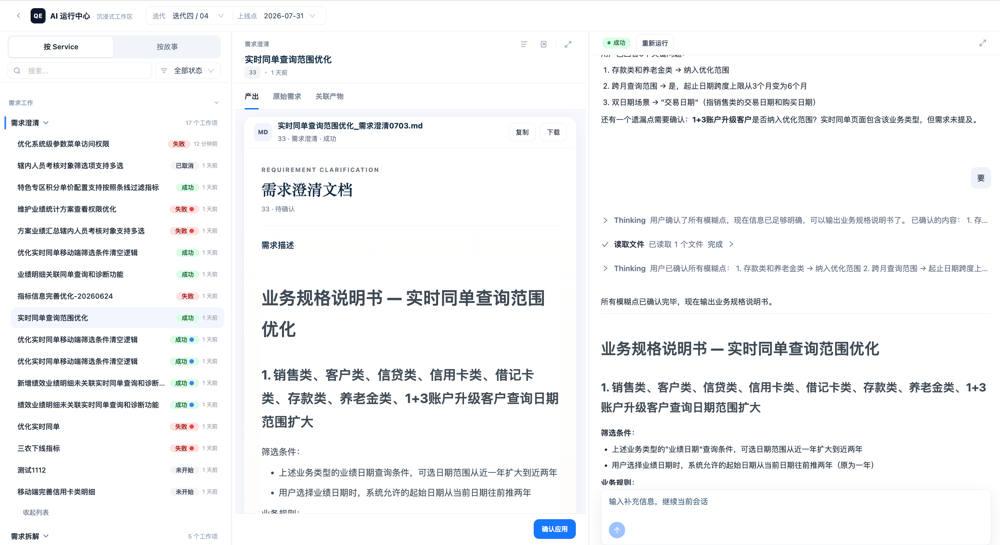
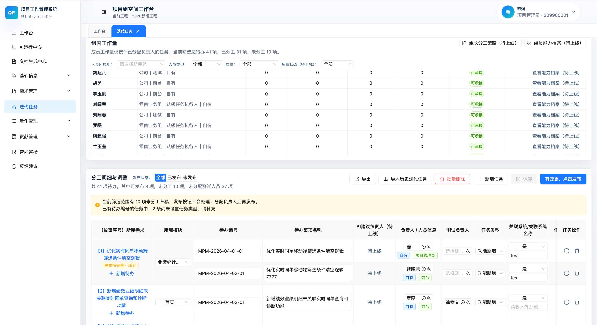
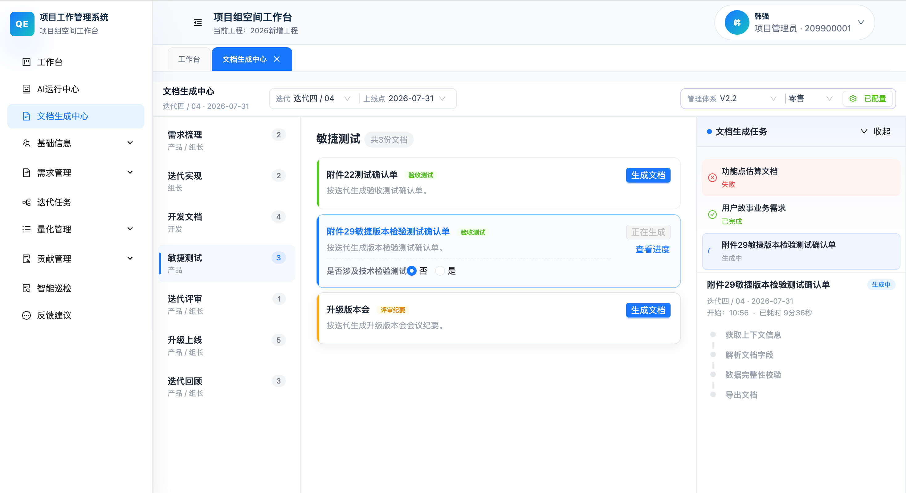
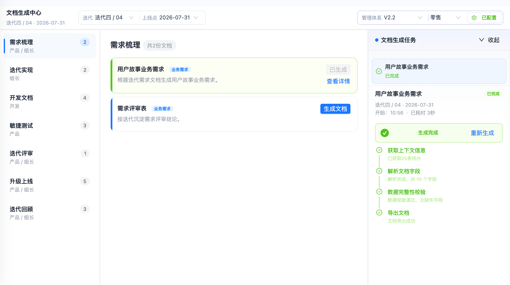

Collaboration
从组队机制到项目管理体系
多智能体协作原理
与项目管理实践验证
选择分享主题
多智能体协同原理
× AgentHub 项目实践
让 AI Agent
围绕项目管理体系运行
Orchestration
下篇 · AgentHub 项目实践
多智能体
协同原理
拿 Token 换性能 ——
所以只打值得打的仗。
先从一个
Agent 聊起
但任务一复杂，三个毛病就暴露了。
单个 Agent 的三大局限
上下文装不下
多阶段任务里，对话历史越滚越长，模型开始「丢三落四」。
阿里的典型例子：「金额字段统一 DECIMAL(22,6)」写在最开始的提示词里，跨过 30 轮对话、5 个阶段之后，模型就忘了。
不是模型变笨 —— 是注意力机制天然不擅长保持长程约束。
既当运动员
又当裁判
让同一个 Agent 又写代码、又评审自己的代码，它很难发现问题。
这不是态度问题，是认知偏差。
生产对策：写的人和评的人，必须是两个 Agent。
只能串行
一个 Agent 一次只能干一件事。三个模块的活：
串行 10 分钟的活，并行只要 3 分钟。
先泼一盆冷水：多智能体不是免费的
相比单 Agent 的效果提升
效果与成本，必须放在同一本账上算
多个 Agent 怎么组队：
六种队形
但「多派几个」怎么个派法 —— 拿人的团队打比方就清楚了。
Peer-to-Peer 圆桌讨论 · Swarm 工单转交 · Dynamic 动态路由
六种队形：组织方式决定协作上限
Supervisor 主从式
协调者拆任务、派活、收结果、汇总。生产环境绝对主流：Claude Code 子代理、LangGraph、CrewAI 全收敛于此。可控，但协调者耗 Token、易成单点瓶颈。
Hierarchical 层级式
团队大了就分层：总监管经理、经理管队员。适合大规模跨领域协作；代价是层间传递慢、每层管理者的指令都更难写。
Pipeline 流水线
一道接一道，最简单、最好排查问题；但没法并行，上游堵了下游只能干等。
Peer-to-Peer 圆桌讨论
适合离线评审：方案比选、代码审查。毛病是聊个没完 —— 成本约单模型 2.5×，只有高风险决策才值得用。
Swarm 工单转交
没有总调度，直接交接，比主从省一次中转、延迟低。最大的坑是循环转交：A→B→A 无限乒乓，生产上必须设转交上限。
Dynamic 动态路由
路由角色先判断任务类型再分发。适合请求类型差异大的场景；代价是路由逻辑本身要持续维护。
队形怎么选：四条经验
老老实实 Supervisor + 人工审批，任何写操作都要有人点头。
用转交模式，省中转、延迟低 —— 但务必给转交次数设上限。
并行扇出（Fan-out）再汇总 —— 扇出的只给只读任务。
从 Supervisor 起步 —— 它是被验证最充分的模式。
配合的
五个关键机制
五个机制，环环相扣。
3.1 隔离：各干各的，互不干扰
- 读文件的缓存 —— 克隆一份给子 Agent
- 写全局状态的权限 —— 直接收回：子 Agent 的写操作变成空调用
- 任务注册的通路 —— 保留
每个子 Agent 拿到
全新的空白上下文
- 不带协调者的对话历史
- 故障隔离：一个子 Agent 跑偏，不污染别人
- 也让并行执行成为可能
而是让每个 Agent 只看到它该看到的
3.2 通信：异步 + 消息
父 Agent 调子 Agent、等它返回 —— 同步调用会把父 Agent 卡死几分钟，五个子 Agent 被迫串行。这条路走不通。
- 父 Agent 把消息写进子 Agent 的待收队列就返回 —— 不等
- 子 Agent 每轮循环检查信箱，把消息当成一条新的用户输入来处理
- 子 Agent 已停止？发信自动从磁盘恢复历史，把它唤醒
- 干完活，拼一段结构化 XML 送回：任务编号 · 状态 · 结果摘要 · Token 用量 · 耗时
JSON Schema 契约交接后的错误率
阿里走得更远：Agent 之间干脆不直接对话，全部通过预定义格式的结构化文件交换信息 —— 可追溯、可审计、可恢复。
类比 USB 接口 —— 在下层接工具
类比 HTTP —— 在上层做编排
一个在下层接工具，一个在上层做编排 —— 不是一回事。
3.3 状态：谁来记，记在哪，怎么防错
| 层 | 内容 | 规矩 |
|---|---|---|
| 全局状态 | 目标 · 计划 · 进度 · 错误摘要 | 大家都能看，只有协调者能写 |
| Agent 自身 | 草稿 · 工具缓存 | 各自隔离，互不可见 |
| 任务级 | 输入 · 输出 · 重试次数 · 幂等键 | 只能追加结构化记录，不能改历史 |
干活的 Agent 每次只做一件事：追加一条「我观察到了什么」—— 账目永远不会乱，出了问题顺着记录查。
不保存「当前状态」，只保存事件序列。
不用重复调一次大模型 —— 既省 Token，又天然有了断点续传和审计能力。
3.4 调度：协调者到底该干什么
收结果
合成答案
- 验证永远派新 Worker —— 不能让干活的自己验自己
- 新任务与某 Worker 上下文高度相关 → 接着干；不相关 → 派新的
- Worker 不许再派 Worker —— 收回派生权限，扁平一层，防嵌套失控
- 派活时把目标、输出格式、边界写清楚 —— 指令模糊 = 重复劳动 + 盲区
3.5 成本：跑得起，才算数
多 Agent 成本 = Σ Worker Token + 协调者 Token × 轮数 + 合并开销
Prompt 缓存只要请求前缀逐字节相同就命中，命中后价格是一折。Fork 的子 Agent 完整继承父上下文前缀 = 花十分之一的价钱复制一个「分身」。
「原本因为成本不敢派的活，现在都敢派了 —— 这反过来扩大了系统的能力边界。」
规划用强模型、执行用便宜模型；简单任务少派人，复杂任务多派人。
个别子 Agent 超时（约 2–3%），用已完成的结果继续合成、标注哪块缺了 —— 而不是整体重来。
从「能跑」
到「敢用」
—— 阿里 Harness 实践
4.1 约束不是束缚，是保险带
- 流程设 8 个关键检查点，强制检查项不给 Agent「我觉得不需要」的权力
- 写的人和评的人分开 —— 生产者与评审者必须是不同 Agent
- 1688 原则：往前走必须有人点头，打回来直接改不用再审批 —— 正向流转必须审批，回退路径放开
- 每个环节最多返工 3 次，超时人工介入
4.2 评测：把「感觉还行」变成「持续可信」
- 非确定性：同样的输入不一定同样输出
- 黑盒：决策过程不透明
- 错误级联：前面的小错被后面放大
- 假阳性：最终答案看着对，执行路径其实已经偏了
- 评测集分层采样，防止偏差
- 每月替换 20% 题目，防过拟合
- 裁判模型打分定期与人工校准，相关系数 ≥ 0.7
4.3 规模上来之后：这其实是分布式系统
操作系统换页、Akka 的 Actor 钝化 —— 都是同一个思想。
几百个 Agent 同时调同一个模型的 API-Key，触发限流就是雪崩。解法：给每个模型供应商建一个「虚拟令牌池」，下游返回限流信号时队列自动放慢投递，配合指数退避重试。
05 · 协同的另一半：人和制度
个人提效 ≠ 组织提效
- 人给 AI 当「搬运工」，手动补上下文
- AI 几分钟生成，人花几小时验证
- 对能力边界没数：低估错过效率，高估导致返工
- 根子：研发体系是围着人设计的 —— 信息按人的分工切块，AI 拿不到完整上下文；流程按人的节奏串行，并行优势发挥不出
- 腾讯：人不是从系统里退出，而是从处理任务转向建设任务系统
- 1688：价值从「SQL 写得多快」变成「能让多少经验被组织复用」；甚至给 AI 员工申请真实工号，专职做需求澄清
- 毕马威：银行员工转型「智能体教练」和「高级裁判员」
06 · 行业里的真实样子
把 Agent 编成「小队」：一组 Agent + 协作指令 + 知识包，整体复制（fork）、独立迭代。知识工程：200 多个指标人工录入要数周 → Agent 扫描存量脚本自动抽取 + 人工审核，只要几小时。上线 6 周，跑了 18 支小队。
30 多个 Agent，覆盖四类场景：标准需求全链路 · Bug 修复闭环 · 平台自我迭代 · 历史问题池定期打捞。两点经验：每个环节的输出要定义「准出字段」，下游才能稳定消费；返工定向到出错的环节，而不是全链路重跑。
消费级产品的做法不同：主从架构藏在 6 只拟人化「小马」背后；端侧跑 35B 量化模型（省成本、保隐私、断网可用）；做完操作给用户一张带开关的卡片，不满意一键回退。上线第三天服务器被用户挤爆，传播全靠自来水。
工行按岗位布「一岗一助手」，覆盖需求到运维六大岗位；浦发智能体总数超 2500，真正嵌进核心业务流程的约 200 个 —— 上线易、入流难，8% 的入流率就是行业缩影。参考模板：对公信贷四智能体流水线（图谱核验 → 反欺诈 → 合规审查 → 贷后监控）。
07 · 落地建议：上线前的八条自检
- 不给重规划设上限 —— 无限循环烧 Token
- 写操作无审批、无幂等 —— 生产环境重复退款
- 转交条件模糊 —— Agent 之间无限乒乓
- 允许 Worker 再派 Worker —— 嵌套失控
- 搞「全能上帝 Agent」—— 上下文爆炸
- 最普遍的一条：能跑就上线 —— 重蹈入流率 8% 的覆辙
AgentHub：「群聊式」
多 Agent 协作工作空间
把上篇的协同原理，落成一种每天都在用的形态。
背景：协作的「节点」变多了，载体还停留在日志
协作记录
碎片化
每次调用 Agent、脚本或工具，产出的都是一段孤立日志：文本、代码、命令输出、错误信息混杂在一起。
任务链越长（需求澄清 → 设计 → 编码 → 联调 → 部署），碎片化逐级放大。
上下文
难以复用
文件、产物、决策依据分散在不同窗口、不同工具，甚至不同人的电脑里。
新成员接手、跨部门协作、几周后回头看自己做的事，都要花大量时间「考古」。
审批与风险
控制缺位
批量改文件、执行敏感命令、上线发布，往往是「先做后知」。
出错难以第一时间拦截，事后难以追溯责任归属 —— 质量与数据安全的双重隐患。
并行缺少
统一视图
前端、后端、测试分别推进时，结果汇总、进度跟踪基本靠人工拉群、发消息催办。
遗漏、重复、信息不同步的情况，时有发生。
设计思路：把协作搬进「群聊」
把 Agent
当作联系人
像 @ 同事一样调用 Agent 与工具：有名字、有角色、有在线状态 —— 调用即对话。
把会话
当作工作空间
一项任务的全部过程 —— 讨论、思考、调用、产出 —— 沉淀在同一个可追溯的会话里。
把文件与产物
当作共享上下文
任务绑定工作区目录；文档、代码、部署预览统一以产物卡片挂载，随取随用。
五条措施：从「零散日志」到「结构化工作空间」
以「会话」而非「日志」组织工作
消息按结构化 Parts 分类渲染：文本说明 / 代码片段 / 思考过程 / 工具调用 / 执行结果 / 产物引用，各自独立展示。检索「某一步做了什么」，直接定位消息类型，不在大段日志里逐行翻找。
文件与产物纳入「共享工作区」
每个任务绑定明确的工作区目录，所有读写限制在目录范围内 —— 从机制上避免误改其他项目。文档、图片、代码、部署预览统一以「产物卡片」挂载在会话里，点开即可预览。
高风险操作前置审批
批量写入、敏感命令、正式发布：加一个轻量「审批模式」开关 —— 执行前弹出确认卡片、列明操作内容，批准后才真正执行。把「先斩后奏」变成「先审后行」。
任务可拆分、可并行、可汇总
引入「协调者」角色（人工 PM，或具备编排能力的工具 / Agent）：拆解大任务 → 分发给人或工具并行处理 → 自动跟踪各子任务的完成 / 失败 / 阻塞状态 → 全部完成后自动聚合为一份结构化总结 —— 减少「逐个催进度、手动拼结果」的沟通成本。
本地优先、数据自主可控
核心数据 —— 会话记录、密钥、工作区文件 —— 默认保存在本地或团队自有环境，不依赖第三方托管服务。兼顾协作效率与数据安全合规，尤其适合对数据出境、第三方存储有严格限制的场景。
流程走查 ①：从需求到计划 —— 澄清与审批，都在会话里

Orchestrator 主动追问关键问题，用结构化选项代替自由文本 —— 答完提交，需求边界先对齐再动手。

思考过程透明可见；拆出的子任务以「计划待确认」卡片前置审批 —— 拒绝或执行，人点头才算数。
流程走查 ②：从生产到交付 —— 产物可预览，结果可看懂

PRD 以产物卡片挂进会话，右侧点开即预览 —— 不用再去邮件、网盘、聊天记录里分头找。

Orchestrator 自动聚合交付总结：已实现功能逐项打勾、技术要点、下一步建议 —— 旁边就是可运行的应用预览。
目标成效：用「结构化」替代「碎片化」
| 维度 | 现状痛点 | 改进后预期效果 |
|---|---|---|
| 可追溯 | 事后说不清任务当时为什么这么改 | 任何一项任务的来龙去脉，均可在会话中完整复原 |
| 提效率 | 反复查找文件、拼凑上下文耗时 | 结构化产物 + 工作区管理，直接节省沟通与查找时间 |
| 降风险 | 高风险操作「先做后知」，误操作难追责 | 前置审批 + 工作区路径限制，从流程上降低生产事故概率 |
| 易协同 | 新成员 / 跨部门接手任务，交接培训成本高 | 打开会话即获得完整上下文，降低交接和培训成本 |
推广场景：不止研发，四个岗位都能用
软件研发
代码评审、需求拆解、多人 / 多工具并行开发的任务跟踪与产物沉淀。
尤其适合前后端并行、多 Agent 辅助编码的团队。
项目管理
多方协作的项目群，用结构化会话替代零散的微信 / 邮件沟通记录。
便于项目复盘、进度审计与知识沉淀。
测试运维
变更操作、脚本执行前引入审批流程，降低误操作风险。
执行记录全程可追溯，便于故障排查与事后复盘。
数据安全
与合规
敏感文件读写、批量操作场景，工作区隔离 + 审批机制双重把关。
满足内控与审计合规要求。
总结
让 AI Agent
围绕项目管理体系运行
覆盖需求、任务、分工、评审、文档与复盘节点
核心命题：一条主线，两个围绕
AI Agent 围绕项目资产
与流程节点运行
不再靠个人复制粘贴上下文 —— 而是基于系统组织的需求、任务、代码、文档、负载做判断，在节点上输出澄清、拆解、分工与文档。
人围绕 AI 输出
确认、修正与沉淀
人从重复整理上下文，转向确认问题、修正草案、采纳或驳回建议，并把结果沉淀为项目资产。
为什么要做：让 AI 从个人工具进入项目流程
迭代上下文
未组织
一个迭代拆成多需求、多任务，由不同人承接；既有迭代级文档也有需求级文档，却缺乏「迭代 → 需求 → 任务 → 人员 → 代码 → 文档 → 反馈」的统一视图。
AI 输出
未入流程
AI 结果停留在个人对话里，没有变成可确认、可复用、可追踪、可沉淀的团队管理资产 —— 无法进入评审表、估算单与任务记录。
项目资产
未增强
澄清、拆解、偏差、评审、缺陷、上线问题被记录了，却没有回流 —— 无法反过来校准下一轮的需求理解、拆解、估算与评审。
判定标准：怎样才算 AI 真正进入流程
统一上下文输入
结合迭代、需求、任务、人员、代码、文档和反馈判断 —— 而非只读一段需求或代码。
流程对象输出
进入需求评审表、估算单、任务记录、评审意见和复盘记录 —— 而非停留在聊天结果。
人工确认生效
AI 可建议，但不替代责任人决策 —— 最终由组长、开发、测试确认、修正、采纳或驳回。
执行反馈回流
执行偏差、评审问题、上线问题、复盘结论回流为项目资产 —— 成为下一轮判断依据。
= AI 进入项目管理流程
AI 如何参与：嵌入统一工作区，沿项目链路持续参与
- 左侧导航 —— 按 Service / 按故事，双视图切换
- 中间业务区 —— 渲染结构化产出
- 右侧会话区 —— 承载 AI 运行会话
AI 负责「读上下文、找缺口、给草案」；人负责「确认、调整、定稿」。
每个关键环节都留有人工确认点（如「确认应用」「确认任务拆解」）—— AI 建议不会绕过人工直接生效。

同一屏内：左导航切换 Service / 故事，中区渲染结构化产出，右区承载 AI 会话 —— 无需在多个页面反复跳转。
一条核心业务链路
需求 / 故事
业务需求条目
录入、澄清与确认
待办任务
可执行工作项
模块归属 + 复杂度
分工负责人
能力匹配 + 负载均衡
AI 建议 + 组长确认
迭代 / 上线点
上线交付与评估
计分与复盘
完整案例：一个需求走完整个生命周期
案例 ①：从录入到澄清 —— 模糊需求变成工程约束

「需求导入解析太慢，需要改造成异步任务」被录入系统 —— 批量导入一次生成 53 条需求，AI 从这条需求开始持续参与。
AI 识别不明确点：「是否允许并发解析？失败是否重试？是否保留历史结果？」；人工补充 2 个约束后「确认应用」定稿 —— 一句模糊需求 → 可执行工程约束。
案例 ②：拆解与分工 —— 每条建议都可核对

拆为前端 / 后端 / 数据库 / 测试 / 文档 5 类 12 条可执行待办，每条标注模块归属、改动范围、复杂度与工作量。

结合迭代工作量、组员能力档案与组长分工策略，逐条给出建议负责人 + 理由 + 置信度 + 工作量前后对比 —— 组长确认后才写回。
案例 ③：测试、文档、上线、复盘 —— 全程留痕

AI 基于需求与模块生成单元 / 集成测试用例，识别成功 / 失败 / 刷新 / 重复提交 / 重解析 5 种场景；缺陷记录回流为过程级资产。

16 类文档按 7 个迭代阶段自动生成：模板类走路径 B（后端直连），需规与测试文档走路径 A（Runner 异步批量）。
实现原理：项目资产如何组织上下文
- 需求评审表
- 功能点估算单
- 测试说明
- 上线材料 / 迭代总结
- 需求说明
- 澄清记录
- 详细设计
- 接口说明 / 拆解记录
- 项目代码
- 接口实现
- 数据表 / 配置
- 提交记录
- 任务状态
- 评审意见
- 缺陷记录
- 上线问题 / 复盘
- 成员能力画像
- 当前工作负载
- 历史交付
- 组长分工策略
「导入解析改异步」中，Agent 同时读取需求描述、代码仓库、库表结构、测试模板四类资产，才给出前端 / 后端 / 数据库 / 测试的完整拆解 —— 单靠一段需求文本做不到。
为什么这样设计：五个设计决策
资产进入判断 → 人工确认 → 执行反馈 → 回流增强资产 —— 持续增强的正向飞轮。
系统架构：五层架构，两条调用路径
后端 → Runner（独立进程）→ Ucode 智能体 → 大模型
异步执行，能读代码工作区
后端 → 大模型（进程内直连）
链路更短、延迟更低
已落地能力：6 项 Service + 17 类迭代文档

左侧按 7 个阶段切换，中间一键「生成文档」，右侧实时展示任务队列与执行状态 —— 模板类走路径 B，需规 / 测试走路径 A 异步批量。
边界与规划：AI 不做什么，下一步去哪
资产质量是上限
需求不完整、文档缺失、任务混乱、代码复杂 —— Agent 建议质量都会下降。资产治理与 Agent 建设同等重要。
人不被绕过
AI 负责建议 + 理由 + 置信度；最终决策与管理责任仍在组长 / 开发 / 测试 —— 关键动作必须人工点击确认，并记录确认人与时间。
不追求完全自动化
当前目标是验证关键节点价值（澄清 / 拆解 / 分工 / 文档 / 巡检）—— 闭环载体已成形，节点正逐步打通。
6 项能力 · 17 类文档 · 双路径链路 · 三栏工作区
代码评审单 / 改进计划补全 · 任务分配独立 Service · 上线问题回流与工作量校准
全链路 AI 覆盖 · 跨项目资产共享 · UCode 编码辅助